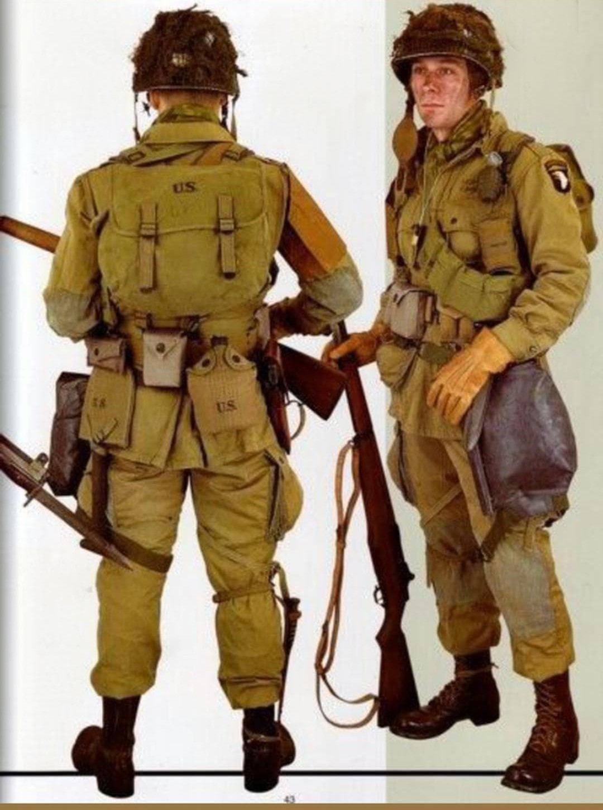
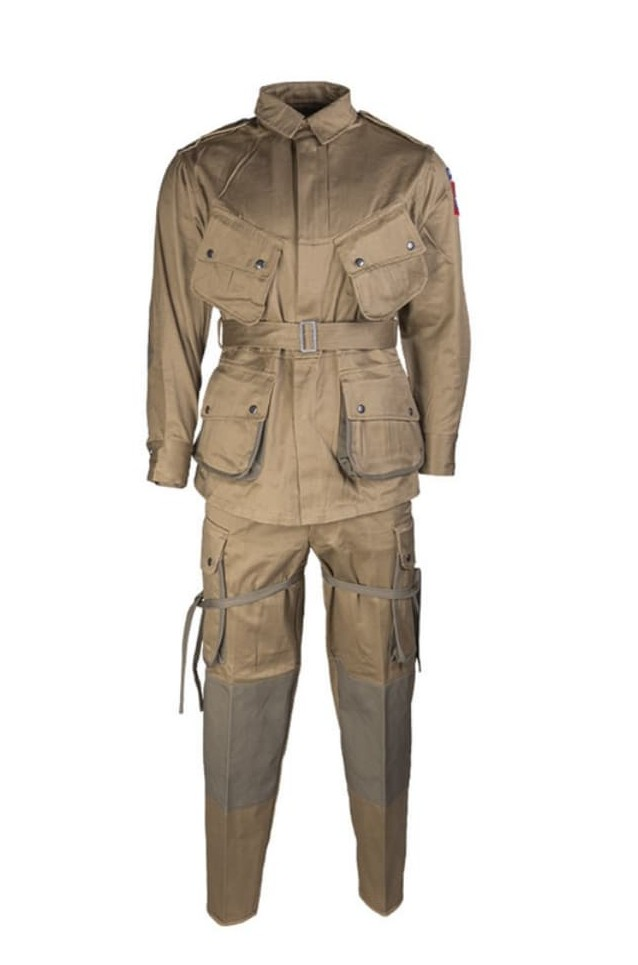

Les unités aéroportées américaines, notamment la 82nd Airborne et la 101st Airborne, comptent parmi les troupes les plus emblématiques de la Seconde Guerre mondiale. Leur uniforme spécifique, conçu pour le saut en parachute et le combat rapproché, se distingue par sa robustesse, ses renforts et son équipement surchargé avant les opérations.
Utilisé en Normandie, en Hollande (Market Garden) et dans les Ardennes, l’uniforme Paratrooper est devenu un symbole fort de l’engagement américain en Europe.
L’uniforme standard des parachutistes américains en 1944 est le M42 renforcé, composé d’une veste et d’un pantalon en toile légère, renforcés aux coudes, aux genoux et aux poches. Il est complété par les célèbres Jump Boots Corcoran, le casque M1C avec jugulaire spécifique, et un équipement très chargé pour l’opération aéroportée.
Avant le saut, les soldats portent le parachute T‑5, la musette Griswold, des grenades, des munitions supplémentaires et divers outils indispensables au combat derrière les lignes.


Les parachutistes américains jouent un rôle crucial lors du Jour J, où ils sont largués derrière les lignes allemandes pour sécuriser les routes, les ponts et les villages stratégiques. Leur action permet l’avancée des troupes débarquées sur les plages.
Ils participent ensuite à l’opération Market Garden en Hollande, puis à la défense de Bastogne durant la bataille des Ardennes. Leur uniforme, devenu iconique, reflète la dureté des combats et l’importance de ces unités d’élite.